使い方といっても難しいことはありません。基本は予定情報を入力して登録を押すだけですが初回のみカレンダーIDの設定などをしなくてはなりません。
カレンダーIDの設定
GCalendarClient（以後GCC）の起動が完了したら、ウィンドウ上部のナビゲーションバーから”Edit”→”settings.iniを編集”の順で選択します。
すると”setting.ini”がテキストエディタで開かれると思います。（エディタ選択画面が表示された場合はお好みで選択してください。）
”settings.ini”内の”[CALENDAR]”の”calendarid=”の部分を予定を追加したいカレンダーのIDに変更してください。
すると”setting.ini”がテキストエディタで開かれると思います。（エディタ選択画面が表示された場合はお好みで選択してください。）
”settings.ini”内の”[CALENDAR]”の”calendarid=”の部分を予定を追加したいカレンダーのIDに変更してください。
カレンダーIDの確認方法
Googleカレンダーにアクセスします。

画面左側に表示されているカレンダーから予定を登録したいカレンダーの縦三点リーダーをクリックし”設定と共有”をクリックします。
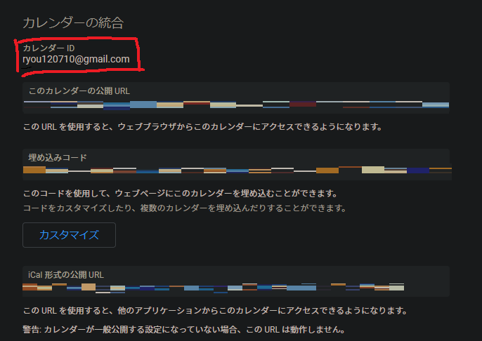
スクロールして下のほうにカレンダーIDが出ているのでそれをコピーして”setting.ini”の”[CALENDAR]””calendarid=”部分に貼り付けます。
複数のカレンダーを使い分けている場合は複数行のの”calendarid=”を作成しておいて使用するカレンダー以外はコメントアウトしておくといいと思います。
画面左側に表示されているカレンダーから予定を登録したいカレンダーの縦三点リーダーをクリックし”設定と共有”をクリックします。
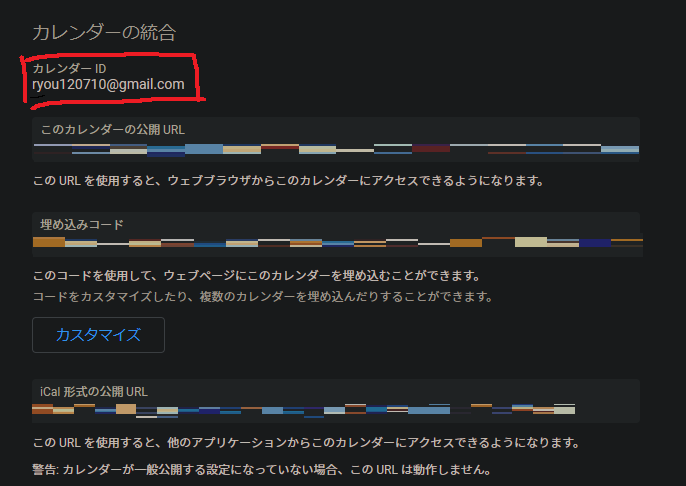
スクロールして下のほうにカレンダーIDが出ているのでそれをコピーして”setting.ini”の”[CALENDAR]””calendarid=”部分に貼り付けます。
複数のカレンダーを使い分けている場合は複数行のの”calendarid=”を作成しておいて使用するカレンダー以外はコメントアウトしておくといいと思います。
予定を登録してみよう
それでは実際に予定を登録してみたいと思います。
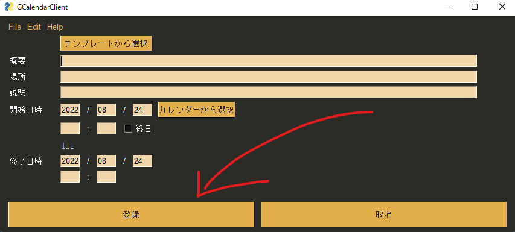
GCCを起動して登録ボタンを押してみてください。
登録を行ったGoogleCalendarに空の予定が作成されているはずです、確認してみてください。
概要（予定のタイトル）や場所・説明などもボックス内に記入すればその通りに反映されます。
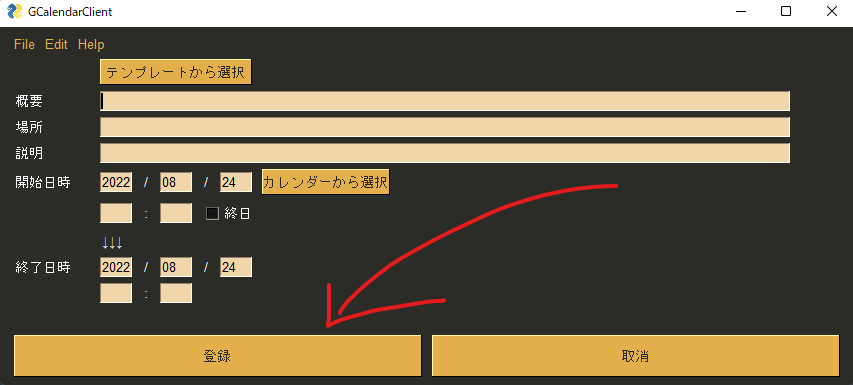
GCCを起動して登録ボタンを押してみてください。
登録を行ったGoogleCalendarに空の予定が作成されているはずです、確認してみてください。
概要（予定のタイトル）や場所・説明などもボックス内に記入すればその通りに反映されます。
予定テンプレートの登録
GCCではよく登録する予定の情報をテンプレートとして登録しておくことができます。
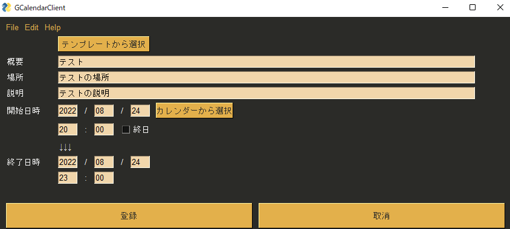
試しに上の情報をテンプレートとして登録してみたいと思います。
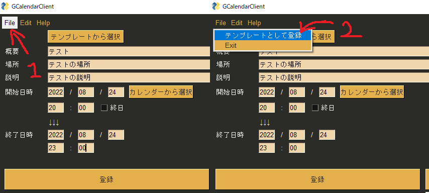
このようにすることで次回起動時からテンプレートとしてこの情報を呼び出すことが可能になります。
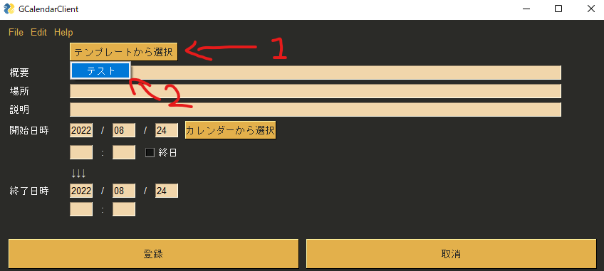 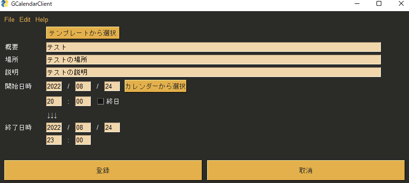
無事にテンプレートとして登録した予定の情報を呼び出すことができました。
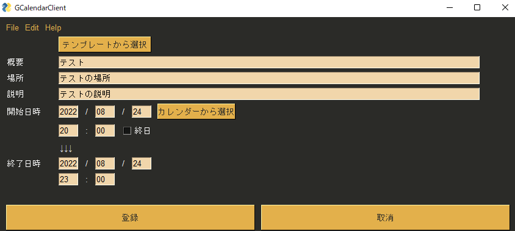
試しに上の情報をテンプレートとして登録してみたいと思います。
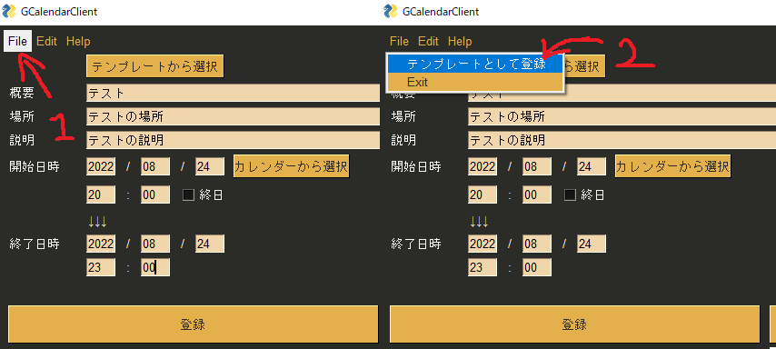
このようにすることで次回起動時からテンプレートとしてこの情報を呼び出すことが可能になります。
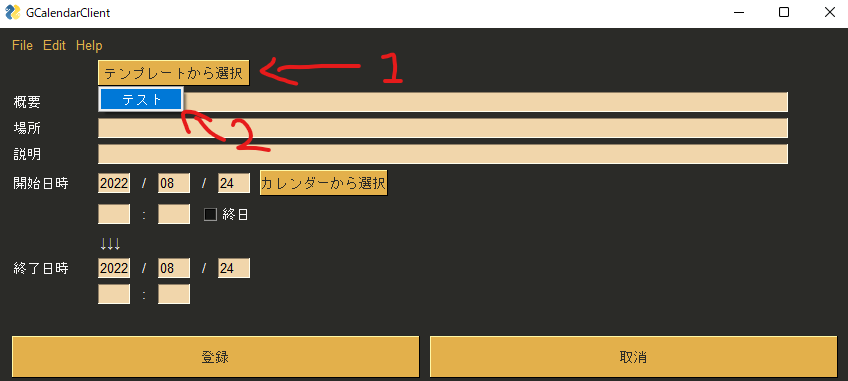 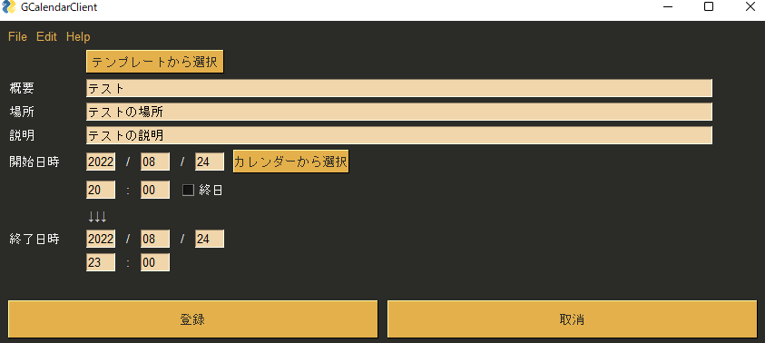
無事にテンプレートとして登録した予定の情報を呼び出すことができました。